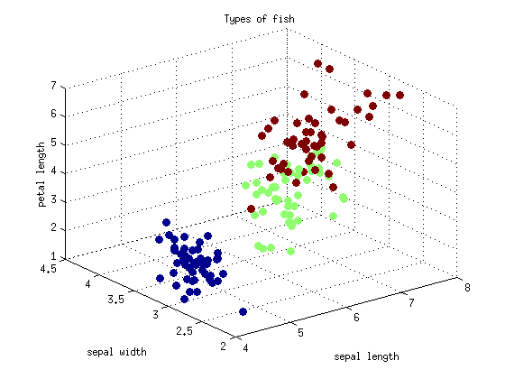

Lesson 2: Principle Component Analysis
Author: Erhu Du
Supervisor: Neal Davis
University of Illinois at Urbana-Champaign
Fall 2015
Contents
Introduction
Principle component analysis (PCA) is a well-applied way for dimension reduction. It takes a linear transformation of features of the original dataset to reduce dimension. The steps associated with PCA are:
1. feature scaling
2. get covariance matrix of the scaled features
3. calculate eigenvalues and eigenvectors of covariance matrix
4. choose eigenvalues and eigenvectors
5. compute dimension-reduced data
Data access and data description
wine data
Wine data are the 13 kinds of chemical tests for 3 different types of wine grown in the same region in Italy. In this tutorial, we choose 2 types of wine instead of 3 for PCA analysis. The 13 features of wine are: 1) Alcohol 2) Malic acid 3) Ash 4) Alcalinity of ash 5) Magnesium 6) Total phenols 7) Flavanoids 8) Nonavanoid phenols 9) Proanthocyanins 10) Color intensity 11) Hue 12) OD280/OD315 of diluted wines 13) Proline
data access
clear all; mydata = csvread('data_wine.csv', 1, 0); features = mydata(:, 2:end); labels = mydata(:, 1);
The first 6 rows of the data are:
mydata(1:6, 1:14)
ans =
1.0e+03 *
Columns 1 through 7
0.0010 0.0142 0.0017 0.0024 0.0156 0.1270 0.0028
0.0010 0.0132 0.0018 0.0021 0.0112 0.1000 0.0027
0.0010 0.0132 0.0024 0.0027 0.0186 0.1010 0.0028
0.0010 0.0144 0.0019 0.0025 0.0168 0.1130 0.0039
0.0010 0.0132 0.0026 0.0029 0.0210 0.1180 0.0028
0.0010 0.0142 0.0018 0.0025 0.0152 0.1120 0.0033
Columns 8 through 14
0.0031 0.0003 0.0023 0.0056 0.0010 0.0039 1.0650
0.0028 0.0003 0.0013 0.0044 0.0011 0.0034 1.0500
0.0032 0.0003 0.0028 0.0057 0.0010 0.0032 1.1850
0.0035 0.0002 0.0022 0.0078 0.0009 0.0035 1.4800
0.0027 0.0004 0.0018 0.0043 0.0010 0.0029 0.7350
0.0034 0.0003 0.0020 0.0067 0.0011 0.0029 1.4500
Implementation in Matlab
*Step 1. * feature scaling: standardilization method
features_scale = zscore(features); features_scale(1:6, :)
ans =
Columns 1 through 7
1.4469 -0.2933 0.3013 -0.9368 1.7619 0.5085 0.7726
0.2880 -0.2137 -0.6746 -2.2307 0.0065 0.2334 0.3660
0.2429 0.4454 1.1090 -0.0545 0.0715 0.5085 1.0166
1.6044 -0.0205 0.5369 -0.5839 0.8517 2.4337 1.3554
0.3330 0.7068 1.7820 0.6513 1.1767 0.5085 0.2711
1.4131 -0.2365 0.3686 -1.0544 0.7867 1.3702 1.2199
Columns 8 through 13
-0.4605 0.9964 0.8889 -0.1120 2.0322 0.7799
-0.6438 -0.8755 0.1139 -0.0527 0.9378 0.7373
-0.2771 1.9601 0.9135 -0.1713 0.4538 1.1203
-0.8271 0.7925 2.2175 -1.1790 1.0430 1.9571
0.5479 0.1253 0.0770 -0.1120 -0.0513 -0.1563
0.0896 0.4033 1.5717 -0.0527 -0.2197 1.8720
*Step 2. * get covariance matrix of the scaled features
covMatrix = cov(features_scale)
covMatrix =
Columns 1 through 7
1.0000 0.0210 0.1908 -0.4618 0.3305 0.4851 0.5437
0.0210 1.0000 0.1216 0.1418 -0.0164 0.0300 0.0579
0.1908 0.1216 1.0000 0.3691 0.3066 0.2545 0.3770
-0.4618 0.1418 0.3691 1.0000 -0.1235 -0.2289 -0.1802
0.3305 -0.0164 0.3066 -0.1235 1.0000 0.3041 0.2553
0.4851 0.0300 0.2545 -0.2289 0.3041 1.0000 0.8465
0.5437 0.0579 0.3770 -0.1802 0.2553 0.8465 1.0000
-0.3013 0.0557 0.1794 0.3350 -0.2129 -0.4447 -0.3588
0.1909 0.1365 0.0778 -0.0970 0.2780 0.4441 0.5429
0.7419 -0.1082 0.2533 -0.4333 0.3455 0.5904 0.7071
0.0262 -0.4086 0.0412 -0.0358 0.0717 -0.0083 -0.0066
0.2905 0.1665 0.2145 -0.0006 0.1308 0.4947 0.5375
0.7562 -0.1076 0.3041 -0.4270 0.4270 0.5062 0.5458
Columns 8 through 13
-0.3013 0.1909 0.7419 0.0262 0.2905 0.7562
0.0557 0.1365 -0.1082 -0.4086 0.1665 -0.1076
0.1794 0.0778 0.2533 0.0412 0.2145 0.3041
0.3350 -0.0970 -0.4333 -0.0358 -0.0006 -0.4270
-0.2129 0.2780 0.3455 0.0717 0.1308 0.4270
-0.4447 0.4441 0.5904 -0.0083 0.4947 0.5062
-0.3588 0.5429 0.7071 -0.0066 0.5375 0.5458
1.0000 -0.3372 -0.2804 0.0513 -0.4686 -0.3300
-0.3372 1.0000 0.2728 -0.0107 0.3425 0.2749
-0.2804 0.2728 1.0000 0.0098 0.2082 0.7753
0.0513 -0.0107 0.0098 1.0000 -0.1015 0.1167
-0.4686 0.3425 0.2082 -0.1015 1.0000 0.2292
-0.3300 0.2749 0.7753 0.1167 0.2292 1.0000
*Step 3. * calculate eigenvalues and eigenvectors of covariance matrix
[eigenVector eigenValue] = eig(covMatrix); eigenValue = diag(eigenValue) eigenVector
eigenValue =
0.0770
0.1907
0.1982
0.2932
0.3693
0.4257
0.6015
0.7256
0.8644
1.1776
1.5110
1.8027
4.7633
eigenVector =
Columns 1 through 7
-0.0066 -0.4796 0.4186 -0.4418 0.0515 -0.2045 0.2734
-0.0108 0.0838 -0.1511 0.0243 -0.2536 0.2135 0.5832
-0.1297 -0.3039 0.0844 0.5886 -0.0533 -0.1049 -0.0223
-0.0027 0.1341 -0.0067 -0.5882 -0.3642 -0.2263 -0.1394
0.0952 -0.0011 -0.0909 -0.1785 0.1948 0.2975 -0.1118
-0.3859 0.2038 0.4320 -0.0517 -0.1277 0.5842 -0.1809
0.7475 -0.1425 -0.1918 -0.0356 0.0140 0.1972 -0.1304
-0.0236 0.2235 0.0769 -0.1690 0.5973 0.1102 0.0264
-0.1704 -0.0856 0.1096 0.0478 0.1050 -0.4494 -0.0305
-0.4245 -0.0233 -0.6882 -0.1567 -0.0910 -0.0593 -0.1782
-0.0391 -0.0150 -0.1250 -0.0296 -0.1300 0.1595 0.6258
-0.1157 0.1749 -0.1558 -0.0436 0.5666 -0.1278 0.2648
0.2038 0.7086 0.1779 0.1334 -0.1705 -0.3498 0.0886
Columns 8 through 13
-0.1090 -0.1026 -0.3097 0.0626 0.1734 0.3578
0.1620 0.1599 -0.4516 -0.1877 -0.4779 0.0008
-0.1619 -0.0625 -0.0459 0.5859 -0.3552 0.1457
-0.1154 -0.0547 0.2220 0.3212 -0.4759 -0.1934
-0.2426 0.8019 -0.0013 0.2436 0.0024 0.2249
0.1081 -0.1822 0.1532 -0.0557 -0.1334 0.3751
0.2385 -0.2587 0.1134 0.0245 -0.1833 0.3949
0.4230 -0.1487 -0.2746 0.4528 -0.0538 -0.2471
0.6230 0.3547 0.2924 -0.1755 -0.2143 0.2435
0.1145 -0.1558 -0.2224 0.1283 0.1666 0.3827
0.1420 -0.0221 0.5463 0.3478 0.3281 0.0104
-0.4359 -0.2004 0.2676 -0.2160 -0.3367 0.2460
-0.0679 0.0305 -0.1790 0.1772 0.1998 0.3724
*Step 4. * choose eigenvalues and eigenvectors Suppose we want to keep more than 80% of the previous information
information = 0.8; [sortedValue index] = sort(eigenValue, 'descend'); figure(1) plot(cumsum(sortedValue)/sum(sortedValue), 'mo--', 'LineWidth', 2) xlabel('Number of principal components') ylabel('Percentage of information (%)') for i=1:length(sortedValue) if sum(sortedValue(1:i))/sum(sortedValue) > information eigenIDs = index(1:i); break; end end eigenValue_pca = eigenValue(eigenIDs) eigenVector_pca = eigenVector(:, eigenIDs)
eigenValue_pca =
4.7633
1.8027
1.5110
1.1776
0.8644
0.7256
eigenVector_pca =
0.3578 0.1734 0.0626 -0.3097 -0.1026 -0.1090
0.0008 -0.4779 -0.1877 -0.4516 0.1599 0.1620
0.1457 -0.3552 0.5859 -0.0459 -0.0625 -0.1619
-0.1934 -0.4759 0.3212 0.2220 -0.0547 -0.1154
0.2249 0.0024 0.2436 -0.0013 0.8019 -0.2426
0.3751 -0.1334 -0.0557 0.1532 -0.1822 0.1081
0.3949 -0.1833 0.0245 0.1134 -0.2587 0.2385
-0.2471 -0.0538 0.4528 -0.2746 -0.1487 0.4230
0.2435 -0.2143 -0.1755 0.2924 0.3547 0.6230
0.3827 0.1666 0.1283 -0.2224 -0.1558 0.1145
0.0104 0.3281 0.3478 0.5463 -0.0221 0.1420
0.2460 -0.3367 -0.2160 0.2676 -0.2004 -0.4359
0.3724 0.1998 0.1772 -0.1790 0.0305 -0.0679
5. compute dimension-reduced data
features_pca = features_scale*eigenVector_pca; features_pca(1:6, :)
ans =
3.1203 -0.0811 -0.1680 0.1889 0.8598 -0.7610
1.1639 1.4105 -1.2696 -0.3940 -0.4285 -0.8595
2.2900 -1.0306 0.2665 0.1272 0.2229 1.0628
4.6240 -0.2986 -0.1812 -0.8659 -0.3453 -0.1752
0.6683 -1.4317 1.5869 -0.4302 0.6718 -0.1155
3.2558 0.9258 0.6876 -0.9134 -0.0954 0.5482
Example: iris data
clear all load fisheriris.mat features = meas(:, 1:3); labels = [repmat(1, 1, 50) repmat(2, 1, 50) repmat(3, 1, 50)]';
plot original 3-D data
figure(2) scatter3(features(:, 1), features(:, 2), features(:, 3), 50, labels, 'filled') xlabel('sepal length') ylabel('sepal width') zlabel('petal length') title('Types of fish')
perform PCA to reduce 3-D to 2-D, and plot the new 2-D data
features_pca = GetPCAFeature(features, 0.8); figure(3) scatter(features_pca(:, 1), features_pca(:, 2), 50, labels, 'filled') xlabel('PCA1') ylabel('PCA2') title('Types of fish')